北斗の拳 ／ TRAINING MOD
TRAINING MOD 取扱説明書 バージョン0.2.1 更新：2026年11月26日
該当する画面がありません。別の検索語を入力してください。
ご利用にあたって 本MODは、個人が制作した非公式の拡張機能です。本MODを使った練習風景の動画投稿・配信を制限する意図はありません。
ただし、原作や関係者への配慮から、MODそのものを広く宣伝したり、配布URLを不特定多数に共有したりすることはお控えいただけますと幸いです。
ダウンロード HOKUTO_TRAIN_MOD_0.2.1.zip ギガファイル便 ダウンロードキー degs
更新履歴 2026年11月26日 バージョン0.2.1 STANDINGをRANDOMにした状態でENEMY SETTINGを開き直すとフリーズする場合がある問題を緊急修正しました。動作確認が十分ではない可能性があります。
2026年11月24日 バージョン0.2
クイック設定を追加 LIFE SETTINGを追加 COMBO SETTINGを追加 STANDINGにRANDOMを追加 リバサ設定に夢想を追加・ブー無想を設定可能に コントローラ切替を追加 制限時間をより詳細に設定可能に コマ送り中にステートロード可能に ヒットボックス・HUDの表示修正 DAMAGE REVERSAL 記録の繰り返し再生 入力履歴とフレームメーター 入力履歴のOFF 2026年10月21日 バージョン0.1 初版リリース。
マニュアル本文
導入・更新
用意するもの
FMCBに対応し、日本版「北斗の拳」のディスクが通常起動するPS2本体、コントローラー、テレビ
そのPS2で起動するFMCB導入済みカード。uLaunchELFまたはwLaunchELFを開けるもの
新品のUSBメモリと、ファイルをコピーするためのPC
純正の日本版「北斗の拳」ディスク（品番：SLPM-66660）
配布されたMODのZIPファイル
1. USBメモリをFAT32にする
まずPCで確認します。以下はWindowsでの操作です。
USBメモリをPCに挿し、エクスプローラーの PC を開きます。
USBメモリを右クリックして プロパティ を開き、ファイルシステムを確認します。FAT32 なら、そのまま手順2へ進めます。
exFATやNTFSなどの場合はプロパティを閉じ、USBメモリを右クリックして フォーマット を選びます。
対象のドライブと容量がUSBメモリと一致していることを確認し、ファイルシステムに FAT32 を選んで 開始 を押します。その他の項目は標準の設定で構いません。
完了したら、プロパティで FAT32 になったことを確認します。
フォーマットするとUSBメモリの中身はすべて消えます。 FAT32が選択肢にない場合は、バッファローのDisk Formatter などのFAT32対応ツールでフォーマットしてください。使用できるUSBメモリとOSは、配布元の案内を確認してください。
2. MODのELFをUSBにコピーする
PCで配布ZIPを右クリックし、すべて展開 を選びます。
展開先を開き、HOKUTO_TRAIN_MOD.ELF をUSBメモリへコピーします。USBを開いてすぐ見える場所に置いてください。
コピーが終わったら、Windowsの ハードウェアの安全な取り外し でUSBメモリを取り外します。
USBメモリを開いたところ
└─ HOKUTO_TRAIN_MOD.ELF
ZIPをそのまま置いても起動できません。同梱の MANUAL.url はPCでマニュアルを開くためのファイルで、PS2での起動には使いません。
3. ディスクを入れずにFMCBを起動する
PS2の電源を切った状態で、FMCBのメモリーカードをメモリーカードスロット1に挿します。
USBメモリをPS2前面のUSB端子に挿し、コントローラーも接続します。
ゲームディスクはまだ入れずに、PS2の電源を入れます。
Free McBoot のメニューが表示されたら、次へ進みます。LaunchELFが自動で開く設定なら、手順4の FileBrowser へ進みます。
先にディスクを入れると、設定によっては通常のゲーム起動が優先されます。その場合はディスクを取り出し、ディスクなしの状態で起動し直してください。
4. LaunchELFでUSBメモリを開く
FMCBのメニューから uLaunchELF または wLaunchELF を選びます。LaunchELF や uLE など、別の名前で登録されている場合もあります。
LaunchELFが開いたら FileBrowser を選びます。決定ボタンは画面下の案内を確認してください。
一覧から mass:/ を開きます。これがUSBメモリです。
HOKUTO_TRAIN_MOD.ELF が表示されていることを確認します。実行は次の手順で行います。
5. 北斗のディスクを入れてMODを起動する
LaunchELFを開いたまま、純正の日本版「北斗の拳」ディスクをPS2に入れます。
トレイまたは蓋を閉じ、ディスクの回転が落ち着くまで少し待ちます。
HOKUTO_TRAIN_MOD.ELF を選び、画面下に表示された決定ボタンで実行します。読み込み画面からゲームが起動するまで待ちます。
画面の表示 状態・確認すること
Waiting for SLPM_666.60... ディスクを探しています。対応するディスクが入り、トレイや蓋が閉じているか確認してください。5分待っても進まない場合は、画面の表示とPS2の型番を控えて開発者へ連絡してください。 Checking executable... 対応するゲームか確認しています。読み込み完了を待ちます。 Reading menu labels from disc... メニュー用の画像をディスクから読み込んでいます。 Verified. Loading game... 確認が終わり、ゲームを読み込んでいます。 Applied ... Starting disc... MODを適用してゲームを起動します。 STOP 起動を中止しています。表示された英語と数値を控えて電源を切り、開発者へ報告してください。
6. TRAININGで追加メニューを確認する
タイトルで TRAINING を選び、キャラとステージを決定します。
練習画面で START を押します。
LOAD STATE／SAVE STATE 、ROUND START SETTING 、CHARACTER SETTING がメニューにあれば、導入完了です。
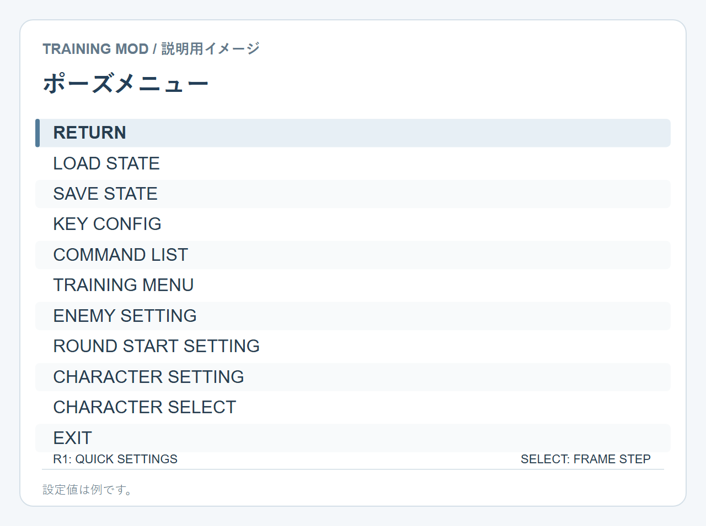
導入後に確認するポーズメニュー。
次回の起動と更新
次回もディスクを入れずにFMCBからLaunchELFを開きます。北斗のディスクを入れ、HOKUTO_TRAIN_MOD.ELF を実行します。ディスクを普通に起動しただけでは、MODは有効になりません。
更新するときはPS2の電源を切り、PCでUSBの HOKUTO_TRAIN_MOD.ELF を新しいELFに差し替えます。展開したフォルダからはELFファイルだけをUSBへコピーしてください。
USBを使わずメモリーカードから起動したい場合
メモリーカードに空きがあれば、LaunchELFでELFをコピーして起動できます。
mass:/HOKUTO_TRAIN_MOD.ELF を選び、R1のファイル操作メニューから Copy を選びます。メモリーカードを開きます。mc0:/ はスロット1、mc1:/ はスロット2です。
BOOT フォルダへ入り、R1 → Paste でコピーします。フォルダがない場合は作成してください。次回から、コピーした mc0:/BOOT/HOKUTO_TRAIN_MOD.ELF（スロット1の場合）を実行します。
既存の BOOT.ELF やFMCBのファイルは上書きせず、HOKUTO_TRAIN_MOD.ELF の名前で置いてください。更新時は実際に起動する方のELFを差し替えます。
途中で進めなくなったとき
症状 確認すること
FMCBメニューが出ない ディスクを取り出し、FMCB導入済みカードをスロット1に挿して起動し直します。PS2本体が対応している型番か確認してください。 LaunchELFが見当たらない uLaunchELF／wLaunchELFなど別の名前がないか確認します。FMCBカードに入っていない場合は、カードの提供元へ導入方法を確認してください。 mass:/が開けない・USBを認識しない USBがFAT32か確認します。PS2の電源を切って別のUSB端子に挿し直し、必要なら別のUSBメモリで試してください。 ELFが見当たらない PCでZIPを展開したか確認します。ELFはUSBを開いてすぐの場所に置き、ZIPの中や別のフォルダに残していないか見直してください。 ディスク待ちで進まない 純正日本版のディスクか、トレイや蓋が閉じているか確認します。PS2でディスクを普通に起動できるかも確認してください。 ゲームは動くが追加メニューがない TRAININGを選んでいるか、ディスクを直接起動していないか、古いELFを別の場所から起動していないか確認します。
参考にした記事 USBの準備とFMCBからの起動の流れは、ピスタチオ＠北斗動画勢さんの厚型PS2向けの導入記事 を参考にしています。
FMCB・LaunchELFの資料 使用前の確認 PS2版「北斗の拳」TRAINING MODの取扱説明書です。バージョン0.2.1に対応しています。導入手順は導入・更新 をご覧ください。
対応する日本版（SLPM_666.60）と配布されたHOKUTO_TRAIN_MOD.ELFを用意し、タイトル画面のバージョン表示を確認してからTRAININGを選びます。0.2.1では「TRAINING MOD VER 0.2.1」と表示されます。更新するときは、起動に使っているELFを差し替えてください。
ボタン 操作 START短押し 離したときにメニューを開きます。メニュー中に押すと、メニューを閉じます。 START長押し 通常プレイ中またはコマ送り中に約0.5秒押し続けると、LOAD STATEを実行します。 SELECT：プレイ中 位置・状態をリセットします。 SELECT：メニュー中 メニューを隠し、1F送りに切り替えます。もう一度押すとメニューへ戻ります。
このマニュアルではMODで追加・変更した項目を説明します。
目的別ガイド：やりたいことから探す 同じ場面からコンボを何度も練習したい 保存した場面に戻って、コンボの続きを練習します。
やること 操作 保存する START → SAVE STATE → ○ 保存した場面へ戻る プレイ中にSTARTを約0.5秒長押し
コンボをやり直したい場面でSAVE する。 メニューを閉じてコンボの続きを練習する。 LOAD して同じ場面からやり直す。詳しく：SAVE STATE / LOAD STATE
入力を1Fずつ遅らせ、どこまでコンボがつながるか調べます。
やること 操作 コマ送りにする START → SELECT 保存する SELECT → SAVE STATE → ○ 1F進める START 保存した場面へ戻る SELECT → LOAD STATE → ○
次の技を入力する手前で、コマ送りにしてSAVE 。 レバーやボタンを入力しながらSTART で進め、つながるか確認。 LOAD し、今度は1F待ってから入力 。待つ時間を1Fずつ増やし、つながらなくなるところを探す。 詳しく：コマ送りの操作 、SAVE STATE / LOAD STATE
画面端・左右反転で練習したい 戻る位置を選び、SELECTで配置し直します。
TRAINING MENU → RESET POSITION
項目 設定 左端／右端 LEFT／RIGHT 左右を入れ替える INVERT付きの位置
RESET POSITION で位置を選ぶ。メニューを閉じ、レバーを離してSELECT 。 ROUND STARTのコールが有効な間は中央固定です。位置や左右反転を変えるときは、ROUND STARTをOFFにしてください。 詳しく：TRAINING MENU
開幕行動を調べたい 相手の開幕行動を記録し、それに自分の技を合わせます。
1．相手の行動を記録 項目 設定 ENEMY SETTING → REC MEMORY SLOT1～5 から記録先を選ぶROUND START SETTING → ROUND START RECORD
メニューを閉じてSELECT 。 コールが終わったら自動でRECが開始するので相手の行動を入力。 REC で記録を止める。2．相手の行動を再生 ROUND START SETTING
項目 設定 ROUND START PLAY PLAY SLOT 記録したスロット
メニューを閉じてSELECT 。コール後に相手の再生が始まる。 自分も技を出し、どちらが勝つか、ガードや後退ならどうなるか調べる。 SELECT でやり直す。詳しく：ROUND START SETTING 、記録の操作
相手の起き上がりリバーサルへの対策を調べたい 起き上がりに技を出させ、重ねやガードで対処できるか調べます。
相手はENEMY SETTING → MODE：DUMMY にし、技に必要なゲージを用意します。
ENEMY SETTING → REVERSAL SETTING → DOWN REVERSAL
項目 設定 MODE FIXED MOVE 出させたい技 DELAY 0F BOOST USE OFF
相手をダウンさせて起き攻めする。 詳しく：DOWN REVERSAL 、RANDOM MOVES
固めの隙間や確定反撃を調べたい 相手に反撃させ、自分の連係や技に隙があるか調べます。
ENEMY SETTING
REVERSAL SETTING → GUARD REVERSAL
項目 設定 MODE FIXED MOVE 反撃技 DELAY／BOOST USE 0F／OFF
詳しく：GUARD REVERSAL 、フレームメータの読み方
相手の連係を再現して、防御を練習したい 相手の連係を記録、再生して防御を練習します。
ENEMY SETTING
項目 設定 REC MEMORY SLOT1～5 から記録先を選ぶ
やること 操作 記録開始 REC → REC （待機 → 開始）記録停止 REC 再生 PLAY
メニューを閉じて記録を始め、相手の連係を入力。 REC で止めて、開始位置へ戻す。PLAY で再生し、ガードや切り返しを練習する。詳しく：RECORD SETTING
ダガキャンや無想で切り返される場面を練習したい 自身の連携の任意のタイミングでダミーにダガキャン・夢想を発動させます。
ENEMY SETTING → MODE：DUMMY、GUARD：ALL 。ガーキャン設定・リバーサル等はOFFにします。
ダガキャンへの対処 相手をユダ にします。
ENEMY SETTING → DAGAR CANCEL SETTING
項目 設定 MODE／GUARD COUNT COUNT／任意のガード回数 DELAY 0F PLAY SLOT SLOT1～5 （下の手順で記録した枠）
ENEMY SETTINGのREC MEMORY：SLOT1～5のいずれか を選ぶ。 記録を開始し、ダガキャン後に出させたい技や連係をユダで入力する。REC で記録を止める。
最速で技を出させたい場合はボタンを押しっぱなしにしながら記録を開始する。 DAGAR CANCEL SETTINGを上の表どおりに設定する。 設定した回数分攻撃をガードさせ、ダガキャンを出させる。 ユダが動けるようになると記録が先頭から再生される。 無想への対処 相手をケン／ラオウ にし、CHARACTER SETTINGの無想転生をMAX／INFINITE にします。
ENEMY SETTING → MUSOU SETTING
項目 設定 MODE／GUARD COUNT COUNT／任意のガード回数 PLAY SLOT SLOT1 （下の手順で記録した枠）
ENEMY SETTINGのREC MEMORY：SLOT1～5のいずれかを選ぶ。 REC → REC で記録を開始し、無想後に出させたい技や連係を相手キャラで入力する。REC で記録を止める。
最速で技を出させたい場合はボタンを押しっぱなしにしながら記録を開始する。無想の残数とゲージを用意し、MUSOU SETTINGを上の表どおりに設定する。 設定した回数分攻撃をガードさせ、自分の攻撃を無想で取らせる。 相手が動けるようになると記録が先頭から再生される。続く技をガードするか、かわして反撃する。 詳しく：DAGAR CANCEL SETTING 、MUSOU SETTING 、記録の操作
技の判定や無敵が切れる瞬間を見たい 判定や無敵の表示を出し、コマ送りで変わり目を見ます。
TRAINING MENU → DISPLAY SETTING
項目 設定 判定を見る HITBOX：ON 無敵・アーマーを見る INVUL / ARMOR：VISIBLE
技を出し、START → SELECT でコマ送りにする。 START で1Fずつ進め、判定が出る瞬間や無敵の色が消えるところを見る。詳しく：DISPLAY SETTING 、コマ送りの操作
コンボのゲージ回収量や蓄積を調べたい コンボのルートを変えて、ゲージ回収量や蓄積を比べます。
TRAINING MENU → DISPLAY SETTING
項目 設定 ゲージ回収量 GAUGE GAIN：ON 蓄積 STATS SETTINGでSTATS：ON 。空きSLOTで○を押し、受け側の1P／2P CHIKUSEKI を選ぶ
ゲージに空きを作り、無限設定を外す。 コンボを決め、「*」が消えてから 回収量を読む。 キャラ・位置・開始ゲージ・蓄積・カウンター条件をそろえて、別ルートを試す。 詳しく：STATS SETTING 、表示項目一覧 、数値の読み方
ポーズメニュー クリックで拡大 ポーズメニュー LOAD STATE SAVE STATEで保存した場面へ戻します。未保存のときは選べません。
SAVE STATE 現在の場面を保存します。新しく保存すると上書きします。
KEY CONFIG SELECTでSTATE KEYSを開き、保存・復元ボタンを割り当てられます。
TRAINING MENU 位置、ゲージ、体力、コンボ開始値、表示などを設定します。
ENEMY SETTING 相手の行動、ガード、自動防御、リバーサル、記録を設定します。
ROUND START SETTING SELECTリセット時のラウンドコール、記録・再生、メットを設定します。
CHARACTER SETTING キャラ固有の効果、ストック、弾数を設定します。
ポーズ画面でR1を押すとQUICK SETTINGS を開きます。
QUICK SETTINGS よく使う設定を変更できます。
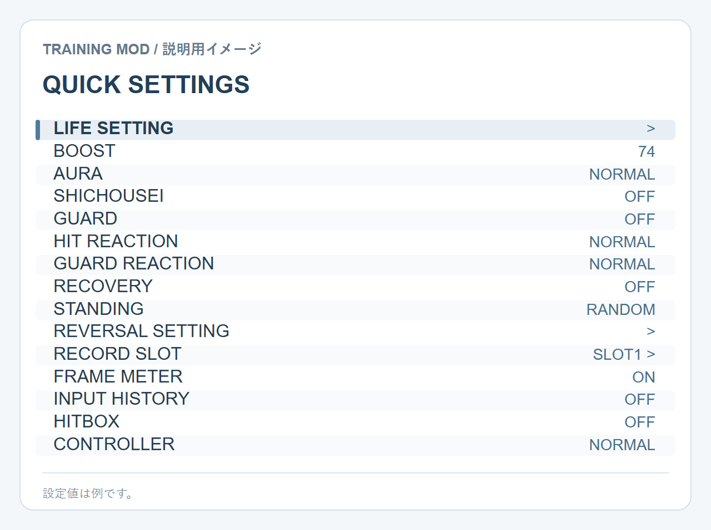
QUICK SETTINGS LIFE SETTING ○でLIFE SETTING を開きます。
BOOST ブーストゲージを設定します。
AURA オーラゲージを設定します。
SHICHOUSEI 死兆星ゲージを設定します。
GUARD 相手のガードを設定します。
HIT REACTION 相手が攻撃を受けたときの反応をNORMAL／COUNTER／RANDOMから選びます。
GUARD REACTION 相手がガードしたときの反応を設定します。
RECOVERY 相手の空中受け身を設定します。
STANDING 相手の起き上がりを設定します。
REVERSAL SETTING ○でREVERSAL SETTING を開きます。
RECORD SLOT 左右でENEMY SETTINGのREC MEMORYと同じ記録・再生スロットを選びます。「>」が表示されているときは○でRECORD SETTING を開きます。
FRAME METER フレームメータの表示を切り替えます。
INPUT HISTORY 入力履歴の表示を切り替えます。
HITBOX 攻撃・食らいなどの判定表示を切り替えます。
CONTROLLER NORMALは通常の操作です。SWAPにすると1P側と2P側のコントローラ操作を入れ替えます。キャラ選択にも引き継ぎます。
TRAINING MENU 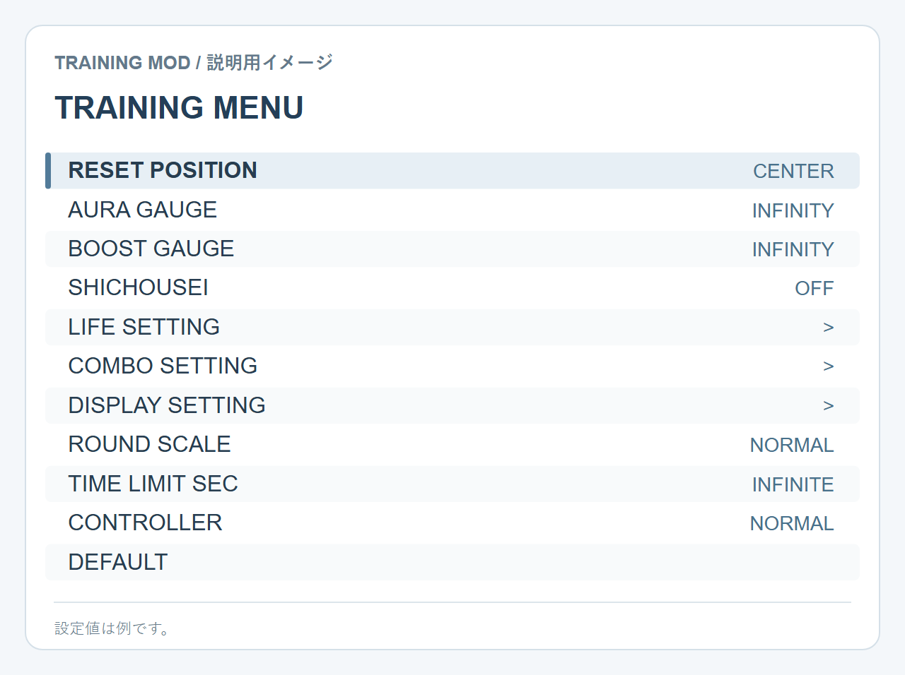
クリックで拡大 TRAINING MENU RESET POSITION SELECTで戻す位置を選びます。CENTER＝中央、LEFT＝左端、RIGHT＝右端。INVERTは1Pと2Pの配置を入れ替えます。
AURA GAUGE NORMAL／1 STOCK／MAX／INFINITY。1 STOCKは1本を補充し、その後は通常どおり消費します。MAXは2本を補充、INFINITYは減らない設定です。
BOOST GAUGE 0～222を左右で1刻み、またはINFINITYに設定します。1本74、3本222です。この行を選んで□を押すと0→74→148→222→0とブースト量が設定されます。
SHICHOUSEI OFF＝通常、ON＝星0固定、1～7から設定します。
LIFE SETTING LIFE SETTING で1Pと2Pの体力や自動回復を設定します。
COMBO SETTING COMBO SETTING で地上・空中の開始ヒット数、蓄積、気絶値を設定します。
DISPLAY SETTING 入力履歴、数値、フレームメータなどの表示設定を開きます。
ROUND SCALE NORMAL＝通常。1P LEAD／2P LEADは、その側がラウンド先取中としてダメージを計算します。リード側の攻撃に元の0.95倍補正が掛かります。
TIME LIMIT SEC ラウンド時間を1～77秒またはINFINITEに設定します。
CONTROLLER SWAPにすると1P側と2P側のコントローラ操作を入れ替えます。キャラセレ画面にも引き継ぎます。
DEFAULT トレーニング設定を初期値へ戻します。
LIFE SETTING 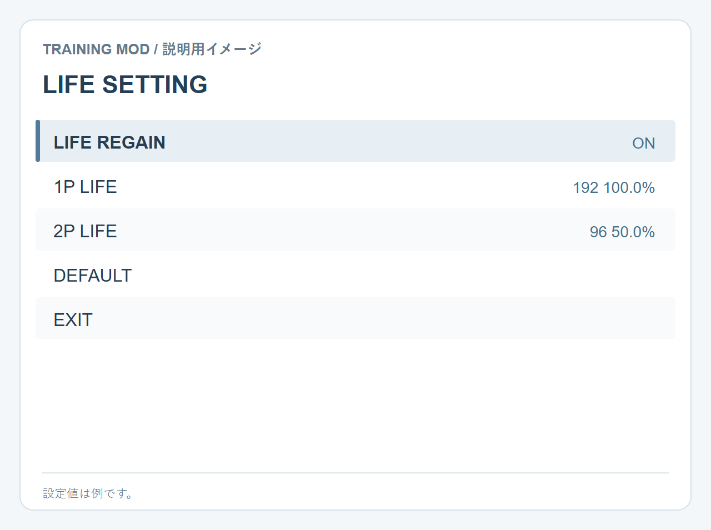
LIFE SETTING LIFE REGAIN 体力の自動回復を切り替えます。
1P LIFE／2P LIFE 1P・2Pそれぞれの体力を1～192に設定します。左右で1ずつ変更し、□で24刻みで値を設定します。
右端の数値は最大体力192に対する割合です。
DEFAULT LIFE REGAINをONにし、両側の体力設定を192へ戻します。
EXIT 前のメニューに戻ります。
COMBO SETTING 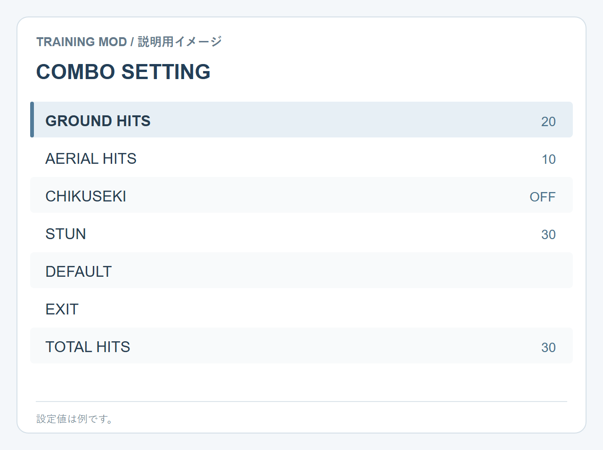
COMBO SETTING 左右で1ずつ、□を押しながら左右で10ずつ変更します。設定値は1P・2P共通です。
GROUND HITS、AERIAL HITS、CHIKUSEKIはOFFまたは1～200で、STUNはOFFまたは1～255です。
GROUND HITS 地上分の開始ヒット数を設定します。コンボの初撃が当たると、AERIAL HITSとの合計を被弾側の総ヒット数に加えます。
AERIAL HITS 空中分の開始ヒット数を設定します。地上で攻撃を当ててから相手を打ち上げた場合も、コンボ開始時の設定値が空中ヒット数に反映されます。
CHIKUSEKI 蓄積を設定します。
STUN 気絶値を設定します。
DEFAULT 開始値をすべてOFFに戻します。
EXIT TRAINING MENUへ戻ります。
TOTAL HITS GROUND HITSとAERIAL HITSの合計です。実際に当てた攻撃の分だけ総ヒット数は増えるので、設定の合計が200なら初撃で201ヒットと表示されます。
AERIAL HITSを設定しても、地上の相手を通常の打ち上げ処理で転ばせる際の吹っ飛びは初段相当です。
DISPLAY SETTING 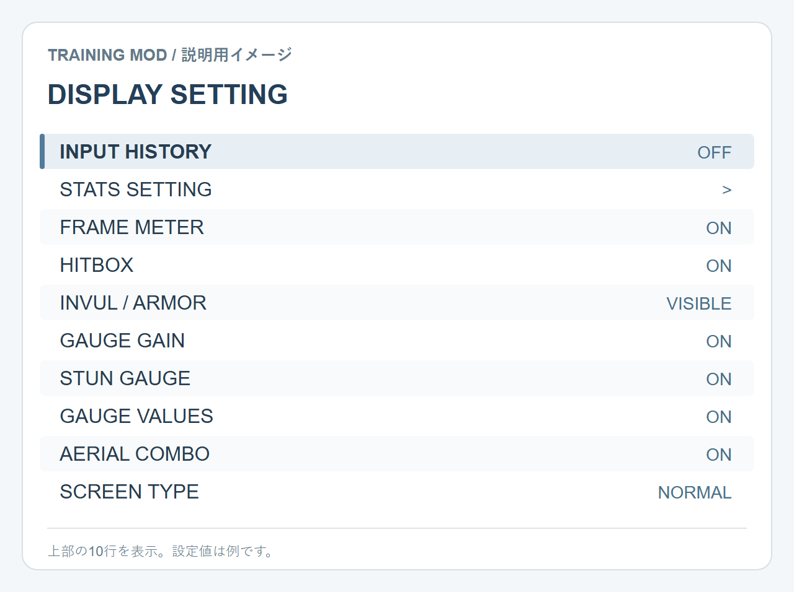
DISPLAY SETTING（上部） 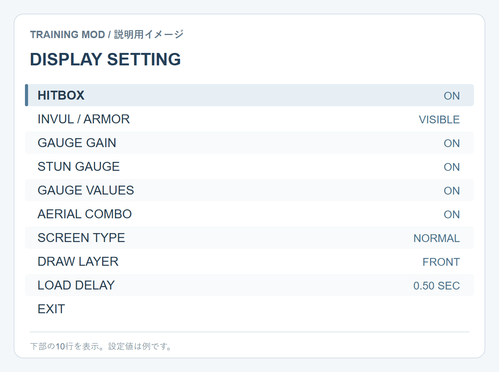
DISPLAY SETTING（下部） INPUT HISTORY 入力履歴を表示します。1P/2Pは両側、1Pまたは2Pは選んだ側だけを表示します。
STATS SETTING 数値表示全体のON／OFFと、表示内容を設定します。
FRAME METER ON／OFF。発生・持続・後硬直・硬直差と時間軸を表示します。
HITBOX ON／OFF。攻撃・食らいなどの判定を矩形で表示します。
INVUL / ARMOR HIDDEN／VISIBLE。キャラの状態に合わせてキャラの色が変化します。
黄色＝打撃・全身無敵、青＝アーマー、緑＝投げ無敵
GAUGE GAIN ON／OFF。HPバーの上に、コンボで両者が実際に獲得したオーラ・ブーストを表示します。
STUN GAUGE ON／OFF。ガードゲージの下に気絶値と耐久値を表示します。
GAUGE VALUES ON／OFF。HP・ブースト・オーラの残量をゲージの横に表示します。
AERIAL COMBO ON／OFF。元のコンボ数表示のすぐ下に、エリアルのカウントを表示します。元のヒット数と同じときは表示しません。
SCREEN TYPE NORMAL／CRT。ブラウン管向けの表示へ切り替えます。初期値はNORMALです。
DRAW LAYER FRONT＝数値表示をキャラより手前へ。NORMAL＝ゲーム本来の描画順。STUNゲージもこの設定に従います。
LOAD DELAY 0／0.25／0.50／0.75／1.00 SEC。ステートロード後に再開するまでの待ち時間を設定します。
EXIT TRAINING MENUへ戻ります。
キャラの色の見方：INVUL / ARMOR VISIBLEにすると、その瞬間の状態に応じてキャラ本体の色が変わります。
キャラの色 意味 見るときの注意 打撃無敵／全身無敵 アーマーや投げ無敵も同時にある場合は、黄色を優先して表示します。黄色だけでは打撃無敵と全身無敵のどちらかまでは区別できません。 アーマー 攻撃を受けても通常の食らい動作にならない状態です。 投げ無敵 通常投げを受けない状態です。打撃無敵はありません。
同時に複数の状態があるときは、黄色 → 青 → 緑の順で優先します。たとえば青で表示されていても、投げ無敵がないとは限りません。空中・ダウン中・食らい中・ガード硬直中というだけでは緑になりません。
黄色：打撃無敵／全身無敵の表示イメージ。 青：アーマーの表示イメージ。 緑：投げ無敵の表示イメージ。 NORMALの表示例 CRTの表示例 STATS SETTING 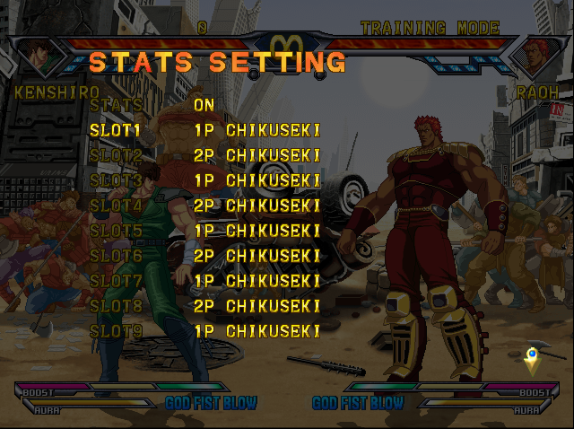
クリックで拡大 STATS SETTING（上部） 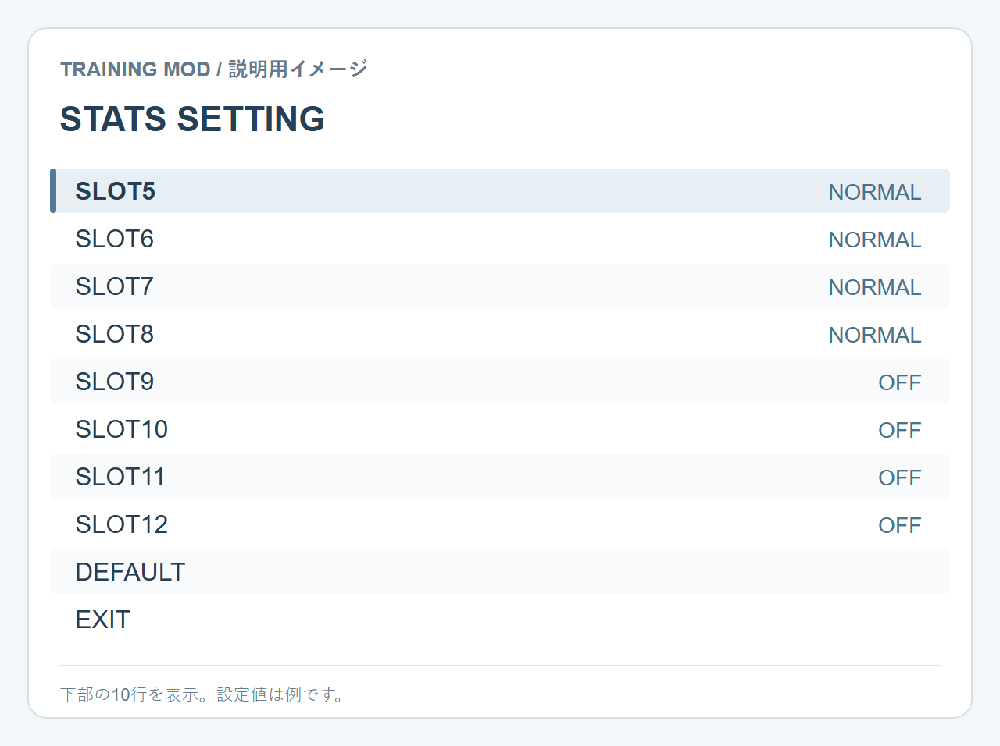
クリックで拡大 STATS SETTING（下へスクロールした状態） STATS ON／OFFで数値表示全体を切り替えます。OFFにしても各SLOTの項目は残ります。
SLOT1 ○で表示項目を選びます。NORMALではDMG1を表示します。
SLOT2 ○で表示項目を選びます。NORMALではDMG2を表示します。
SLOT3 ○で表示項目を選びます。NORMALではTOTAL1を表示します。
SLOT4 ○で表示項目を選びます。NORMALではTOTAL2を表示します。
SLOT5 ○で表示項目を選びます。NORMALではHITSを表示します。
SLOT6 ○で表示項目を選びます。NORMALではMAX DMG1を表示します。
SLOT7 ○で表示項目を選びます。NORMALではMAX DMG2を表示します。
SLOT8 ○で表示項目を選びます。NORMALではMAX HITSを表示します。
SLOT9 追加の表示枠です。初期値はOFF。○で表示項目を選びます。NORMALは選べません。
SLOT10 追加の表示枠です。初期値はOFF。○で表示項目を選びます。NORMALは選べません。
SLOT11 追加の表示枠です。初期値はOFF。○で表示項目を選びます。NORMALは選べません。
SLOT12 追加の表示枠です。初期値はOFF。○で表示項目を選びます。NORMALは選べません。
DEFAULT SLOT1～8をNORMAL、SLOT9～12をOFFへ戻し、STATSをONにします。親画面の設定は変わりません。
EXIT DISPLAY SETTINGへ戻ります。
NORMALの表示は、SLOT1から順にDMG1、DMG2、TOTAL1、TOTAL2、HITS、MAX DMG1、MAX DMG2、MAX HITSです。左右でも項目を直接変更できます。
SELECT ITEM 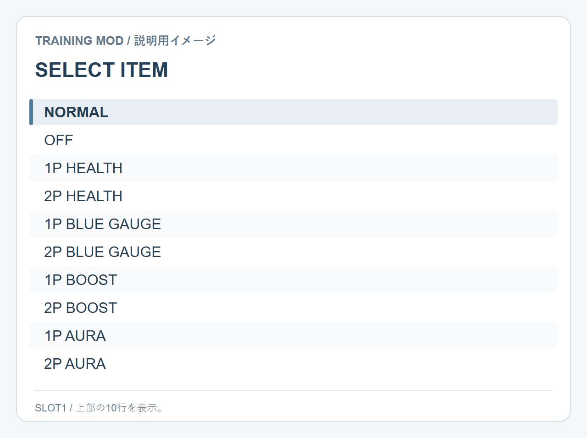
クリックで拡大 SELECT ITEM。上部に編集中のSLOTが表示されます。 ↑／↓で表示する項目を選びます。 ○で確定するとSTATS SETTINGへ戻ります。 対象キャラがいないキャラ固有項目は数値を表示できません。
NORMAL SLOT1～8の元の表示を使います。順にDMG1、DMG2、TOTAL1、TOTAL2、HITS、MAX DMG1、MAX DMG2、MAX HITSです。SLOT9～12では選べません。
OFF この表示枠を非表示にします。
1P HEALTH 1Pの現在の体力です。
2P HEALTH 2Pの現在の体力です。
1P BLUE GAUGE 1Pの青ゲージの値です。
2P BLUE GAUGE 2Pの青ゲージの値です。
1P BOOST 1Pの現在のブースト量です。1本74、最大222です。
2P BOOST 2Pの現在のブースト量です。1本74、最大222です。
1P AURA 1Pの現在のオーラ量です。1本128。小数点以下2桁まで表示します。
2P AURA 2Pの現在のオーラ量です。1本128。小数点以下2桁まで表示します。
1P GUARD GAUGE 1Pの現在のガードゲージ値。
2P GUARD GAUGE 2Pの現在のガードゲージ値。
1P STUN 1Pの現在の気絶の蓄積値です。
2P STUN 2Pの現在の気絶の蓄積値です。
1P STUN LIMIT 1Pの気絶耐久値です。この値と同値では気絶せず、超えると気絶条件を満たします。
2P STUN LIMIT 2Pの気絶耐久値です。この値と同値では気絶せず、超えると気絶条件を満たします。
1P CHIKUSEKI 1Pの蓄積値。
2P CHIKUSEKI 2Pの蓄積値。
1P HITSTOP 1Pのヒットストップの残りFです。
2P HITSTOP 2Pのヒットストップの残りFです。
1P BLUE RECOVERY WAIT 1Pの青ゲージの回復が始まるまでの時間。
2P BLUE RECOVERY WAIT 2Pの青ゲージの回復が始まるまでの時間。
1P UKEMI TIMER 1Pの受け身可能時間。
2P UKEMI TIMER 2Pの受け身可能時間。
1P KOMAKU TIMER 1Pユダのコマクゲージです。
2P KOMAKU TIMER 2Pユダのコマクゲージです。
1P DAGAR TIMER 1Pユダのダガールゲージです。
2P DAGAR TIMER 2Pユダのダガールゲージです。
1P STATUE GUARD 1Pジャギのしゃがみガード時の石像耐久値。通常のガードゲージとは別で、削り切られると石像が壊れてガードクラッシュします。
2P STATUE GUARD 2Pの値ですジャギのしゃがみガード時の石像耐久値。通常のガードゲージとは別で、削り切られると石像が壊れてガードクラッシュします。
1P TIME STOP 1Pの時間停止カウンタです。
2P TIME STOP 2Pの時間停止カウンタです。
1P POSITION X 1Pの横位置です。小数点以下2桁まで表示します。
1P POSITION Y 1Pの縦位置です。小数点以下2桁まで表示します。
2P POSITION X 2Pの横位置です。小数点以下2桁まで表示します。
2P POSITION Y 2Pの縦位置です。小数点以下2桁まで表示します。
1P KNOCKBACK 1Pのノックバック量。小数点以下2桁まで表示します。
2P KNOCKBACK 2Pのノックバック量。小数点以下2桁まで表示します。
1P GRAVITY 1Pの重力。小数点以下2桁まで表示します。
2P GRAVITY 2Pの重力。小数点以下2桁まで表示します。
1P CHIKUSEKI WINDOW 1Pの蓄積増加猶予時間。
2P CHIKUSEKI WINDOW 2Pの蓄積増加猶予時間。
1P BOOST RECOVERY COOLDOWN 1Pのブースト回収不能時間。減少中はACTIVE。
2P BOOST RECOVERY COOLDOWN 2Pのブースト回収不能時間。減少中はACTIVE。
1P AURA RECOVERY COOLDOWN 1Pのオーラ回収不能時間。
2P AURA RECOVERY COOLDOWN 2Pのオーラ回収不能時間。
1P AIR COMBO COUNT 1Pの値です。重力処理が参照するコンボカウント。
2P AIR COMBO COUNT 2Pの値です。重力処理が参照するコンボカウント。
1P SAI TIME LEFT 1Pラオウのサイによる拘束の残り時間。F単位です。
2P SAI TIME LEFT 2Pラオウのサイによる拘束の残り時間。F単位です。
1P SAI KNOCKBACK LEFT 1Pラオウのサイ拘束が解除されるまでの残りノックバック量。小数点以下2桁まで表示します。
2P SAI KNOCKBACK LEFT 2Pラオウのサイ拘束が解除されるまでの残りノックバック量。小数点以下2桁まで表示します。
EXIT 表示項目を変更せず、STATS SETTINGへ戻ります。
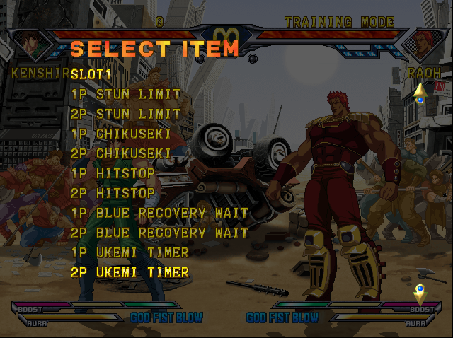
ENEMY SETTING 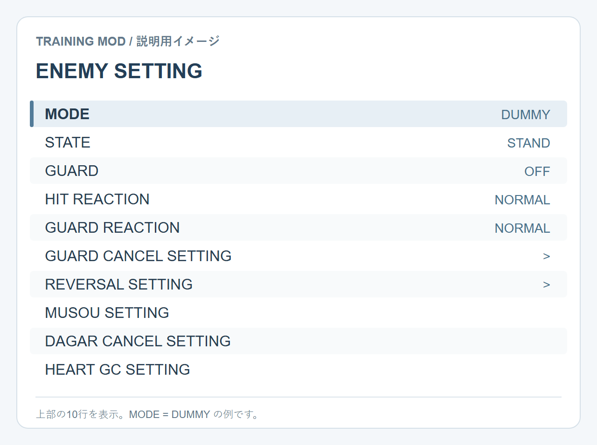
クリックで拡大 ENEMY SETTING（上部） 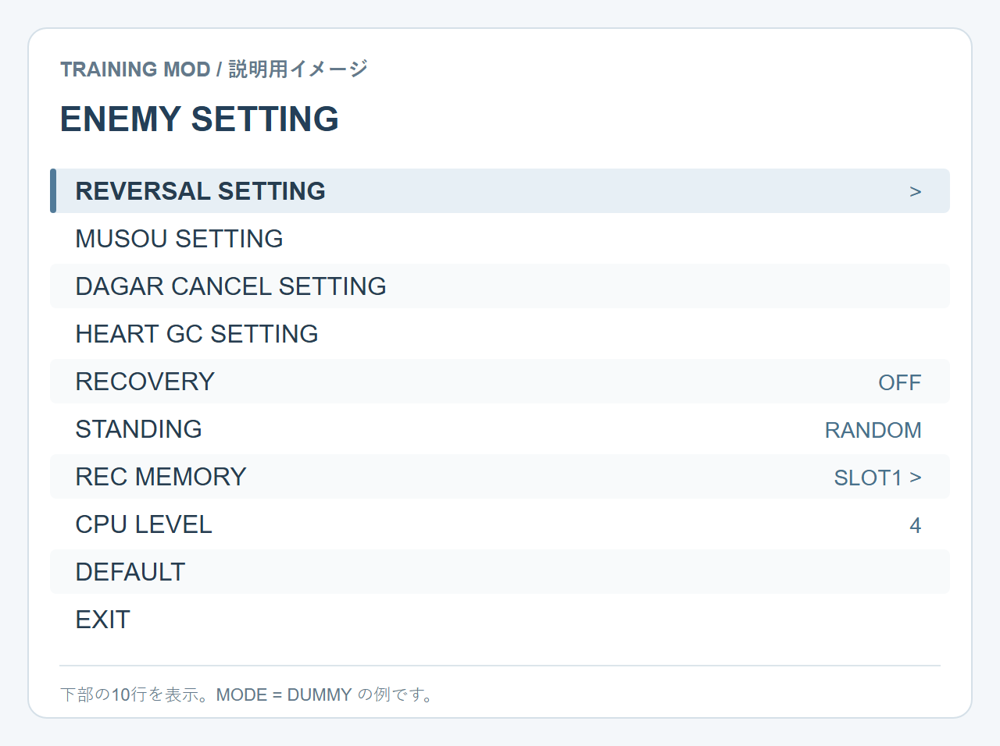
クリックで拡大 ENEMY SETTING（下部・DUMMY時） 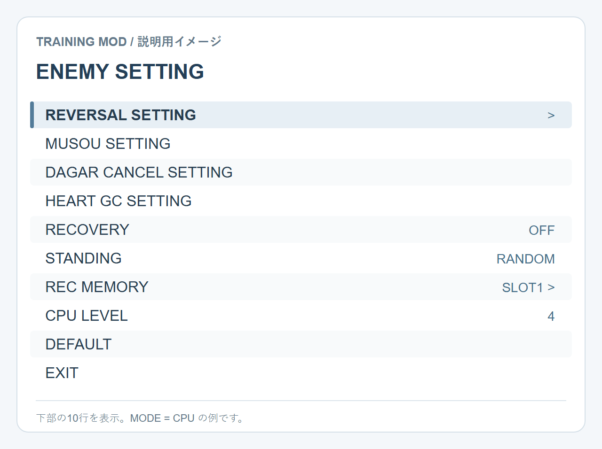
クリックで拡大 MODEをCPUにするとCPU LEVELを変更できます。 GUARD RANDOMを追加。攻撃ごとに50%でガードします。
HIT REACTION NORMAL＝通常、COUNTER＝コンボ始動をカウンターに、RANDOM＝始動で50%抽選。
GUARD REACTION ガード時の相手の反応を設定します。
GUARD CANCEL SETTING 自動ガードキャンセルを設定します。
REVERSAL SETTING 起き上がり・ガード後・空中受け身後の行動を設定します。
MUSOU SETTING 相手がケン／ラオウのとき、無想転生の自動発動の有無を設定します。
DAGAR CANCEL SETTING 相手がユダのとき、自動ダガキャンを設定します。
HEART GC SETTING 相手がハートのとき、固有の自動ガードキャンセルを設定します。
RECOVERY 相手の空中受け身を設定します。
STANDING ダウン後の起き上がりを設定します。
RANDOMではダウンするたびにQUICK／NORMAL／DELAYから抽選し、QUICKが成立しない場面ではNORMAL／DELAYから選びます。
REC MEMORY OFF／SLOT1～5／RANDOM。記録・再生に使うスロットを選びます。○でRECORD SETTINGを開きます。
DEFAULT 相手設定を初期化します。全キャラのリバーサル設定も初期化されます。
GUARD CANCEL SETTING 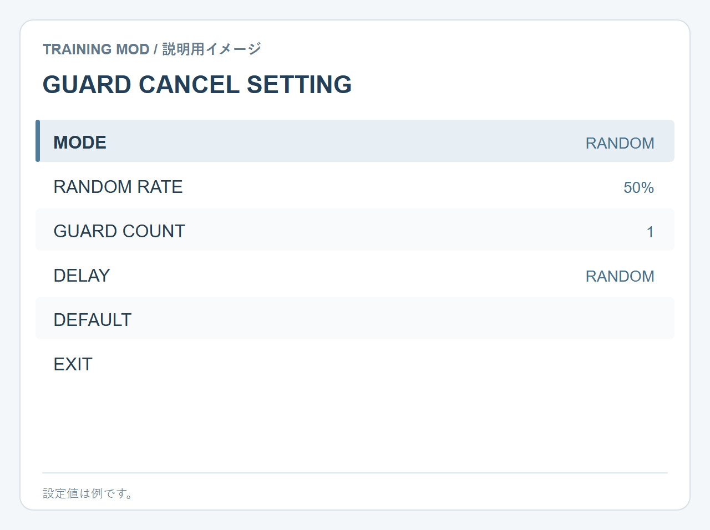
クリックで拡大 GUARD CANCEL SETTING MODE OFF＝無効、COUNT＝指定回数のガードで発動、RANDOM＝ガードごとに抽選します。
RANDOM RATE 0～100%、10%刻み。MODEがRANDOMのときに変更できます。
GUARD COUNT 1～10回。MODEがCOUNTのときに変更できます。
DELAY 0～60F。RANDOMモードではDELAYにもRANDOMを選べます。
DEFAULT OFF／30%／3回／0Fへ戻します。
EXIT ENEMY SETTINGへ戻ります。
ゲージや技の受付条件が足りなければ発動しません。COUNT1は最初のガードで試みます。ガードしない状態が60F続くと回数を初期化します。
DELAYをRANDOMにすると、ガード直後からガード硬直が終わるまでの間で発動するタイミングが毎回変わります。この範囲にはヒットストップ中も含みます。
MUSOU SETTING 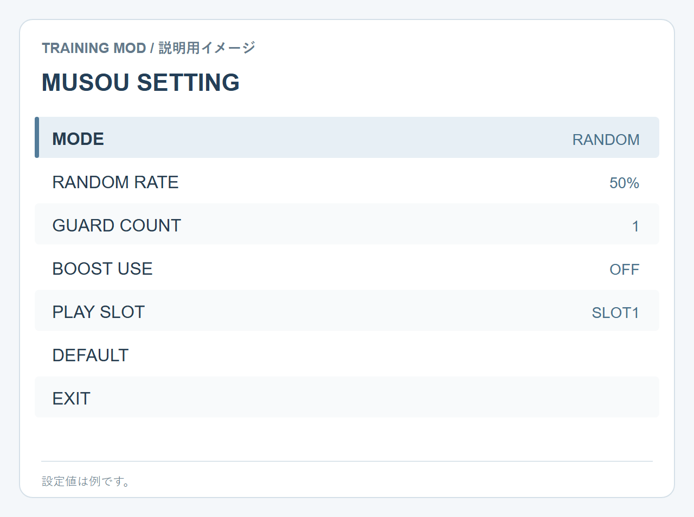
クリックで拡大 MUSOU SETTING MODE OFF／COUNT／RANDOM。無想転生の自動発動の有無を設定します。
RANDOM RATE RANDOM時の発動率。0～100%、10%刻みです。
GUARD COUNT COUNT時の回数。1～10回。COUNT3は2回ガードした後の対象攻撃で試みます。
BOOST USE 無想成功後にブーストを使う時期をOFF／0～60Fで設定します。0Fは成功後に最初にブーストを受け付けるフレームです。
PLAY SLOT 成功後に再生する記録をOFF／CURRENT／SLOT1～5／RANDOMから選びます。
DEFAULT この画面の設定を初期化します。
EXIT ENEMY SETTINGへ戻ります。
発動には無想の残数が必要です。相手の攻撃と無想を使うキャラの状態も、受け流しの条件を満たしている必要があります。
無想を使ったキャラが行動できるようになってから、PLAY SLOTで選んだ記録を再生します。
CURRENTは、ENEMY SETTINGのREC MEMORYで現在選択している記録スロットを再生します。REC MEMORYがRANDOMなら記録のある枠から選び、OFFまたは空の枠なら再生しません。
DAGAR CANCEL SETTING 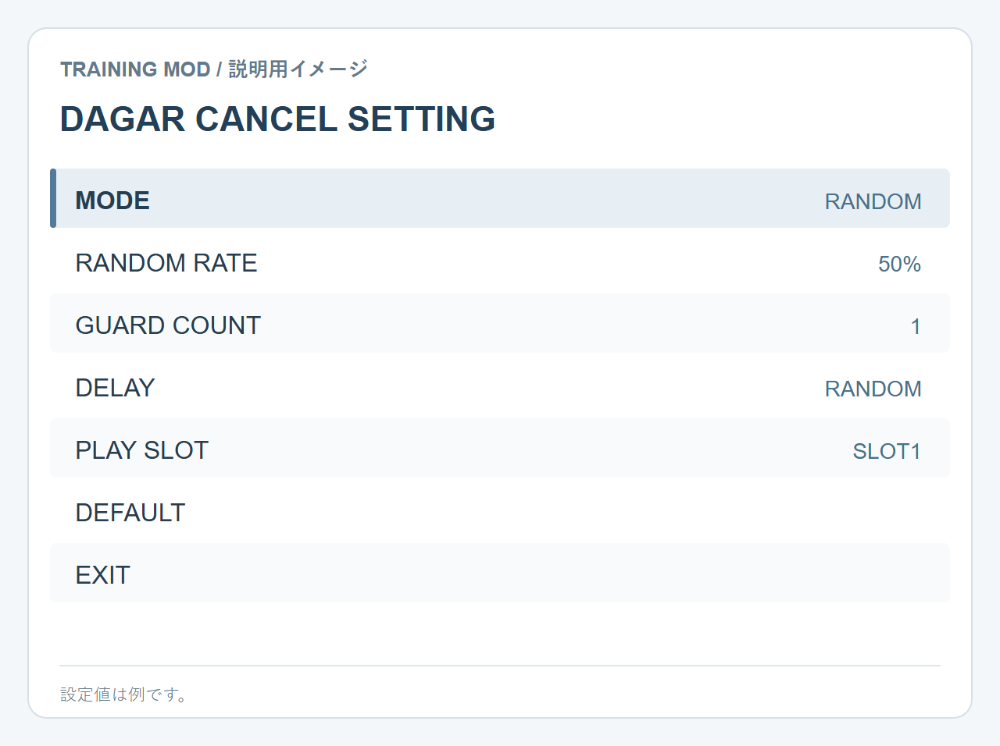
クリックで拡大 DAGAR CANCEL SETTING MODE OFF＝無効、COUNT＝指定回数で発動、RANDOM＝ガードごとに抽選します。
RANDOM RATE RANDOM時の発動率。0～100%、10%刻みです。
GUARD COUNT COUNT時の回数。1～10回です。
DELAY 0～60F。RANDOMモードではDELAY RANDOMも選べます。
PLAY SLOT 成功後に再生する記録をOFF／CURRENT／SLOT1～5／RANDOMから選びます。
DEFAULT この画面の設定を初期化します。
EXIT ENEMY SETTINGへ戻ります。
発動に必要なゲージや入力の受付条件は満たしている必要があります。
ダガキャン後の再生はユダ本体が行動できるまで待ちます。
CURRENTは、ENEMY SETTINGのREC MEMORYで現在選択している記録スロットを再生します。REC MEMORYがRANDOMなら記録のある枠から選び、OFFまたは空の枠なら再生しません。
HEART GC SETTING 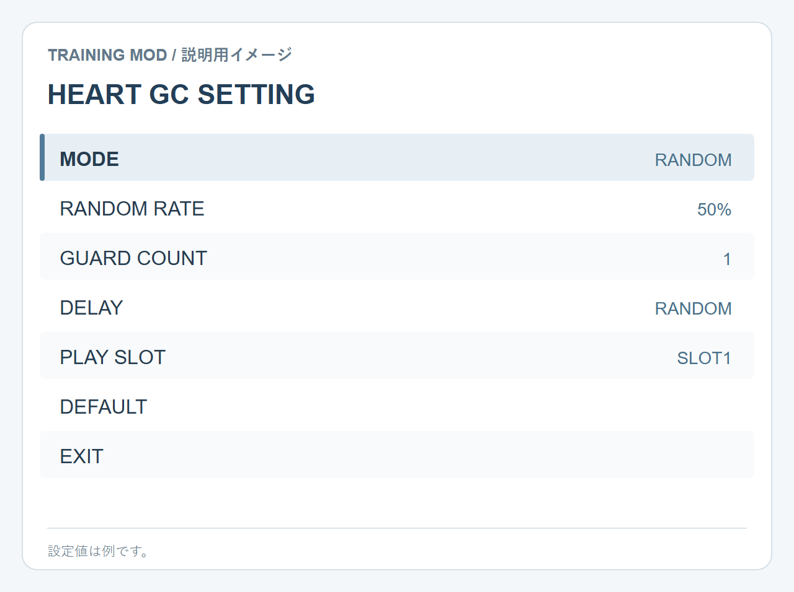
クリックで拡大 HEART GC SETTING MODE OFF＝無効、COUNT＝指定回数で発動、RANDOM＝ガードごとに抽選します。
RANDOM RATE RANDOM時の発動率。0～100%、10%刻みです。
GUARD COUNT COUNT時の回数。1～10回です。
DELAY 0～60F。RANDOMモードではDELAY RANDOMも選べます。
PLAY SLOT 成功後に再生する記録をOFF／CURRENT／SLOT1～5／RANDOMから選びます。空スロットは再生しません。
DEFAULT この画面の設定を初期化します。
EXIT ENEMY SETTINGへ戻ります。
発動に必要なゲージや入力の受付条件は満たしている必要があります。
CURRENTは、ENEMY SETTINGのREC MEMORYで現在選択している記録スロットを再生します。REC MEMORYがRANDOMなら記録のある枠から選び、OFFまたは空の枠なら再生しません。
ハートのガーキャン後は、記録がガーキャン動作中に消費される場合があります。記録の冒頭に待ち時間を入れてから攻撃を入力してください。
REVERSAL SETTING 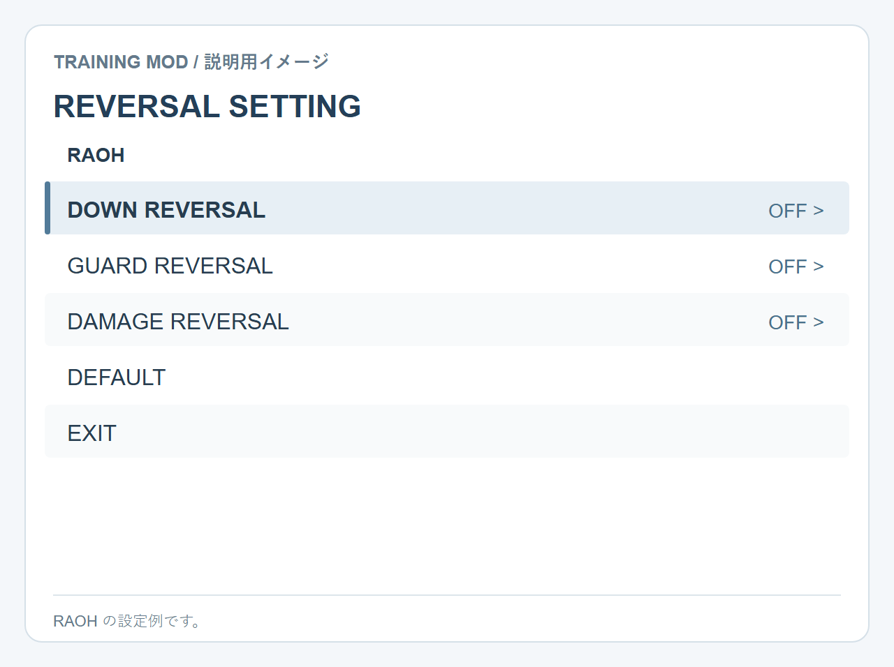
REVERSAL SETTING DOWN REVERSAL DOWN REVERSAL を開きます。
GUARD REVERSAL GUARD REVERSAL を開きます。
DAMAGE REVERSAL DAMAGE REVERSAL を開きます。
DEFAULT 現在のキャラのDOWN REVERSAL、GUARD REVERSAL、DAMAGE REVERSALの設定とランダム候補を初期化します。
EXIT ENEMY SETTINGへ戻ります。
設定はキャラごとに保持します。
DOWN REVERSAL 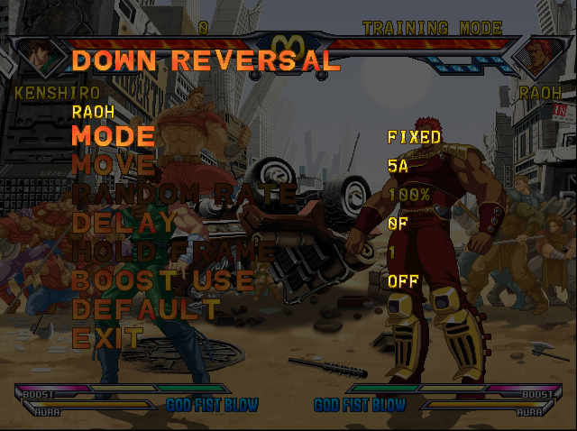
DOWN REVERSAL MODE OFF＝無効、FIXED＝毎回、RANDOM＝指定確率で実行。
MOVE 技・方向を選びます。RANDOMを選ぶと、RANDOM MOVESでチェックした候補から毎回技を選びます。
ケンシロウとラオウはMUSOUを選べます。起き上がり後の最初の受付から5F以内の攻撃が対象です。
RANDOM MOVES MOVEがRANDOMのときに表示。○で候補のチェックを付け外しします。
RANDOM RATE MODEがRANDOMのときの実行確率を、0～100%の10%刻みで設定します。行動するかどうかの抽選と、MOVEの候補から技を選ぶ抽選は別です。
DELAY 起き上がりの入力を0～60F遅らせます。
HOLD FRAME 方向入力、またはC+D（バニ）のボタンを1～120F保持します。対応するMOVEのときに変更できます。RANDOMでは選ばれた対応技に適用します。
BOOST USE OFF／0～60F。0Fは技開始と同じフレーム、1F以降はその次から数えた時点でブーストを1回入力します。ヒットストップ・時間停止中は数えません。
PLAY SLOT ユダのDOWNで41236E(知略の時代)を選択、またはランダム候補に含めると表示。知略が発動し、ユダが行動できるようになってから再生します。OFF／CURRENT／SLOT1～5／RANDOM。
DEFAULT 現在のキャラのDOWN側の設定とランダム候補を初期化します。
EXIT REVERSAL SETTINGへ戻ります。
距離・地上／空中・ゲージなどの条件は通常どおりです。使用できない技やブーストは不発になります。
GUARD REVERSAL 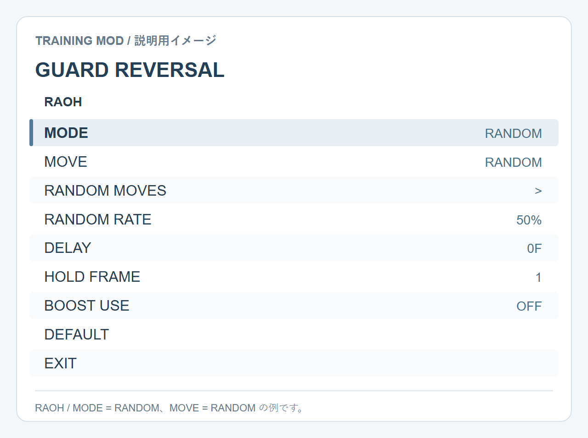
GUARD REVERSAL MODE OFF＝無効、FIXED＝毎回、RANDOM＝指定確率で実行。
MOVE 技・方向を選びます。RANDOMを選ぶと、RANDOM MOVESでチェックした候補から毎回技を選びます。
RANDOM MOVES MOVEがRANDOMのときに表示。○で候補のチェックを付け外しします。
RANDOM RATE MODEがRANDOMのときの実行確率を、0～100%の10%刻みで設定します。
DELAY ガード後の入力を0～60F遅らせます。
HOLD FRAME 方向入力、またはC+D（バニ）のボタンを1～120F保持します。対応するMOVEのときに変更できます。RANDOMでは選ばれた対応技に適用します。
BOOST USE OFF／0～60F。0Fは技開始と同じフレーム、1F以降はその次から数えた時点でブーストを1回入力します。ヒットストップ・時間停止中は数えません。
DEFAULT 現在のキャラのGUARD側の設定とランダム候補を初期化します。
EXIT REVERSAL SETTINGへ戻ります。
距離・地上／空中・ゲージなどの条件は通常どおりです。使用できない技やブーストは不発になります。
空中ガード後のMOVEとRANDOM MOVESには、空中後方ダッシュのj.44と空中前方ダッシュのj.66もあります。高度やダッシュ残数の条件は通常どおりです。DELAYが0Fでも2回目の方向入力までに2Fかかります。
DAMAGE REVERSAL 食らい硬直が解けた後や、空中受け身から復帰した後にダミーが出す行動をキャラごとに設定します。空中受け身はENEMY SETTINGのRECOVERYで設定します。
DAMAGE REVERSAL OFFで無効、FIXEDで毎回、RANDOMで設定した確率で行動します。
MOVE 地上技、空中技、地上の方向入力を選びます。空中技は空中受け身後の空中で、地上技は地上の食らい硬直後や空中受け身から着地した後に出します。j.44は空中後方ダッシュ、j.66は空中前方ダッシュです。高度や空中ダッシュ残数の条件は通常どおりです。
RANDOM MOVES MOVEがRANDOMのときに表示します。チェックした候補から、空中では空中技、地上では地上技や方向入力を抽選します。候補の行で○を押すとチェックが切り替わります。
RANDOM RATE DAMAGE REVERSALがRANDOMのときに行動する確率を0～100%の10%刻みで設定します。
DELAY 受付開始を0Fとして、0～60Fの間で行動を遅らせます。空中技は空中受け身から復帰して最初に入力を受け付けるフレーム、地上技は食らい硬直が解けるか、受け身後に着地して最初に入力を受け付けるフレームが0Fです。j.44とj.66は、DELAYが0Fでも2回目の方向入力までに2Fかかります。
HOLD FRAME 対応する方向入力やボタンを1～120F保持します。
BOOST USE OFFまたは0～60Fでブーストを設定します。0Fでは技の開始と同じフレームに入力します。
DEFAULT 現在のキャラのDAMAGE REVERSAL設定とランダム候補を初期化します。
EXIT REVERSAL SETTINGへ戻ります。
SELECT MOVE 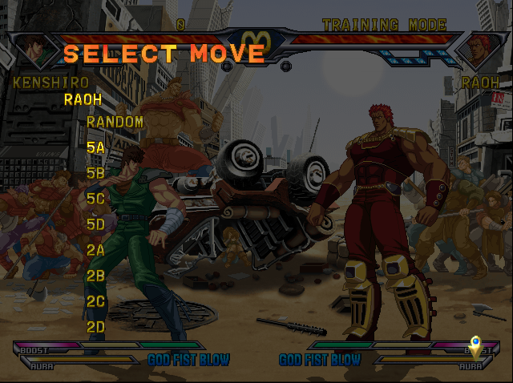
SELECT MOVE。RANDOMは一覧の先頭です。 ↑／↓で選び、○で確定、×で変更せず戻ります。通常技・必殺技・超必殺技・44・ジャンプ・方向入力などを選べます。
RANDOM RANDOM MOVESでチェックした候補から技を選びます。
EXIT MOVEを変更せず、元のリバーサル設定へ戻ります。
RANDOM MOVES 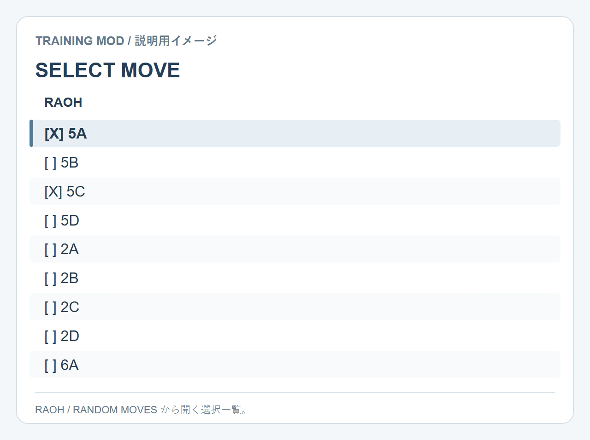
RANDOM MOVES MOVEをRANDOMにします。 RANDOM MOVESを開き、使いたい技を○でチェックします。もう一度○で解除します。 ×またはEXITで戻ります。 チェックした候補から1つを選びます。RANDOMを選んだだけでは候補に技は追加されません。候補を1件も選んでいなければ、何も出しません。地上／空中などの条件で技が出ない場合も、別の技に置き換えて強制発動はしません。
例：毎回5Aか236Aを出すならMODEをFIXED、MOVEをRANDOMにし、5Aと236Aにチェックを入れます。半分の確率で行動するなら、さらにMODEをRANDOM、RANDOM RATEを50%にします。
[X]は抽選対象、[ ]は対象外です。
EXIT 現在のチェックを保ったまま、元のリバーサル設定へ戻ります。
RECORD SETTING 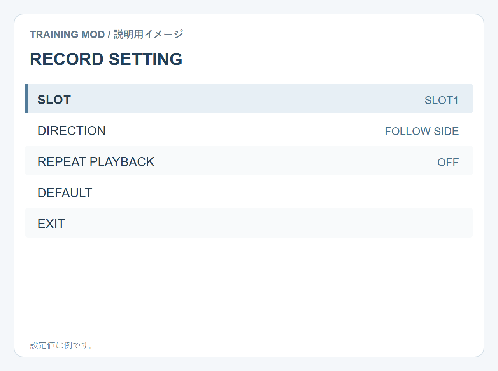
クリックで拡大 RECORD SETTING SLOT 再生時の方向の扱いを設定するスロットを選びます。
DIRECTION NORMAL＝元入力をそのまま再生。FOLLOW SIDE＝相手の側が記録時と逆なら左右を反転します。初期値はFOLLOW SIDEです。
REPEAT PLAYBACK ONにするとPLAY MEMORYで始めた再生を繰り返します。
RANDOMでは再生が終わるたびに録画済みのスロットから抽選し、選ばれたスロットの先頭から再生します。
DEFAULT 編集中のスロットをFOLLOW SIDEに戻し、REPEAT PLAYBACKをOFFにします。
EXIT 設定を開いたメニューに戻ります。
FOLLOW SIDEは毎F位置関係を見ます。1↔3、4↔6、7↔9を入れ替え、上下・ボタン・入力時間は変えません。
記録する・再生する ENEMY SETTINGのREC MEMORYを、記録先のSLOT1～5にします。 KEY CONFIGのRECを1回押して待機、もう1回押して記録を開始します。 相手の操作を記録し、RECでもう一度停止します。 PLAYを押すと再生します。別の行動は別SLOTへ記録できます。RANDOMは記録のあるスロットから選びます。 各スロット最大3600F（約1分）。キャラセレ後も記録を保持しますが、電源OFFでは失われます。
LOAD STATEでは、現在の5スロットの記録内容・左右情報・選択スロット・記録／再生位置を維持します。保存後に録り直した内容も残ります。
ROUND START SETTING 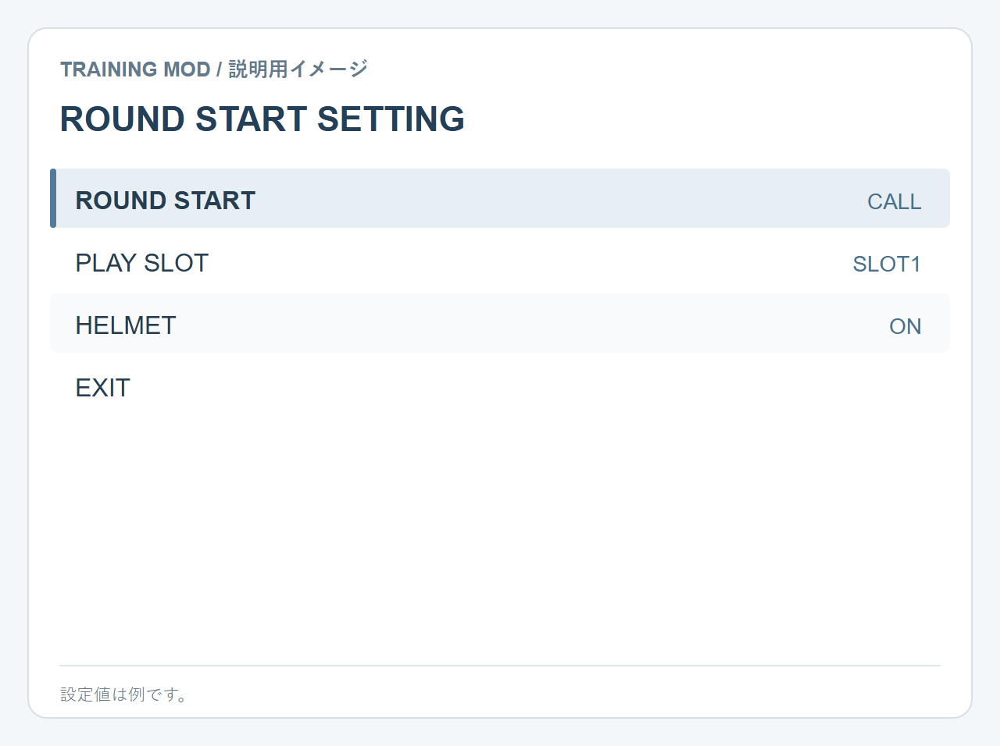
クリックで拡大 ROUND START SETTING（マミヤがいる場合） ROUND START OFF＝通常リセット、CALL＝コールのみ、RECORD＝コール終了後に記録、PLAY＝コール終了後に再生します。
PLAY SLOT OFF＝コールのみ、CURRENT＝現在選択している記録スロットを再生、SLOT1～5＝指定枠、RANDOM＝記録のある枠から抽選。PLAYのときだけ変更できます。
HELMET マミヤのヘルメットラウンド持ち越しバグを再現します。
EXIT ポーズメニューへ戻ります。
プレイ中にSELECTを押すと実行します。
KO後の自動再開では開始しません。
PLAY SLOTのCURRENTは、ENEMY SETTINGのREC MEMORYで現在選択している記録スロットを再生します。
コール後の操作
コールが終わると通常の操作へ戻り、RECORD・PLAYでは設定した記録・再生を開始します。
CHARACTER SETTING 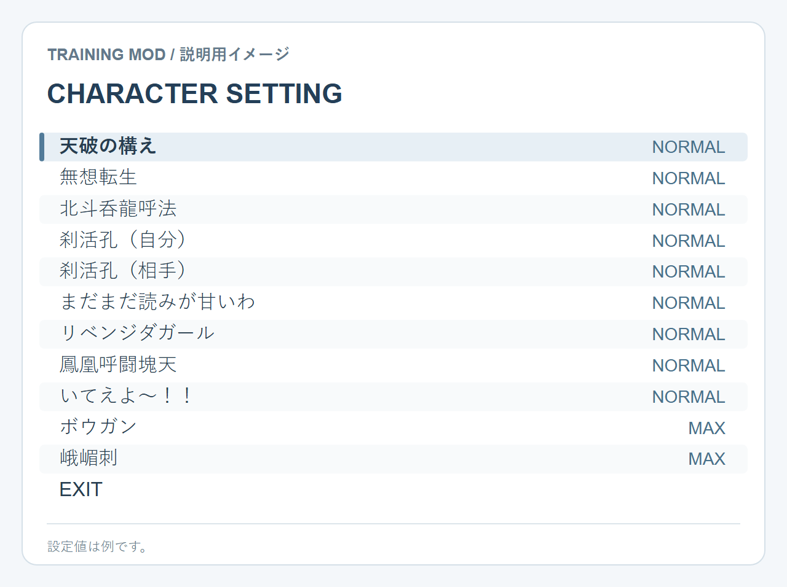
クリックで拡大 CHARACTER SETTING 各項目は左右で変更します。NORMALでは元ゲームの通常処理を行います。
天破の構え ケン：NORMAL / MAX / INFINITE。MAXは天破の構えを付与し1200F間持続。
無想転生 ケン／ラオウ：NORMAL / MAX / INFINITE。MAXは7回補充、INFINITEは7回維持。
北斗呑龍呼法 ラオウ：NORMAL / 1 / 2 / 3 / INFINITE。有限値は指定ストック、無限は3維持。
刹活孔（自分） トキ：NORMAL / MAX / INFINITE。MAXは960F間持続。
刹活孔（相手） トキ：NORMAL / MAX / INFINITE。MAXは960F間持続。
まだまだ読みが甘いわ ジャギ：NORMAL / MAX / INFINITE。MAXは480F間持続。
リベンジダガール ユダ：NORMAL / ALWAYS / NEVER。ALWAYSは常にリベンジ状態、NEVERはリベンジ状態になりません。
鳳凰呼闘塊天 サウザー：NORMAL / MAX / INFINITE。MAXは600F間持続。
いてえよ～！！ ハート：NORMAL / MAX / INFINITE。MAXは1200F間持続。
ボウガン マミヤ：MAX / 0～10 / INFINITE。1刻み。
峨嵋刺 マミヤ：MAX / 0～100 / INFINITE。10刻み。
EXIT ポーズメニューへ戻ります。
KEY CONFIG 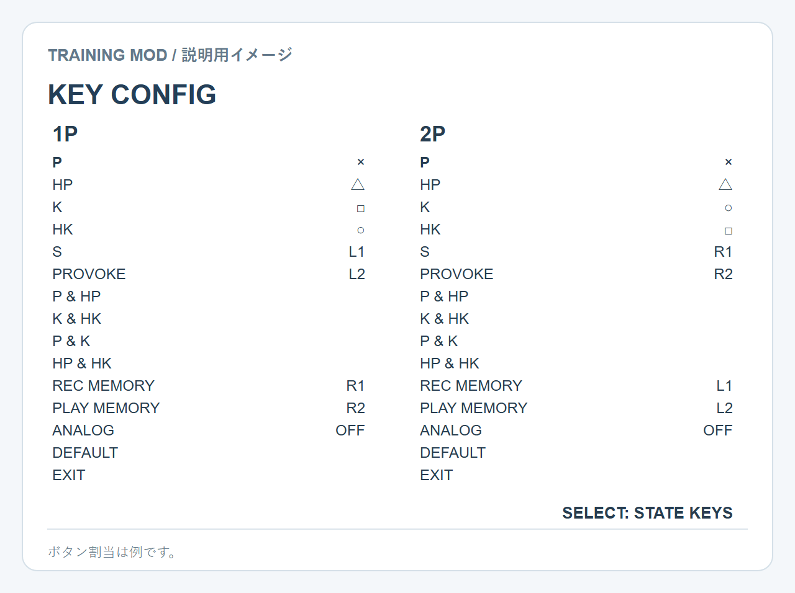
KEY CONFIGからSELECTでSTATE KEYSを開きます。 SELECT: STATE KEYS SELECTでSAVE STATE／LOAD STATEのボタン割当画面を開きます。
STATE KEYS 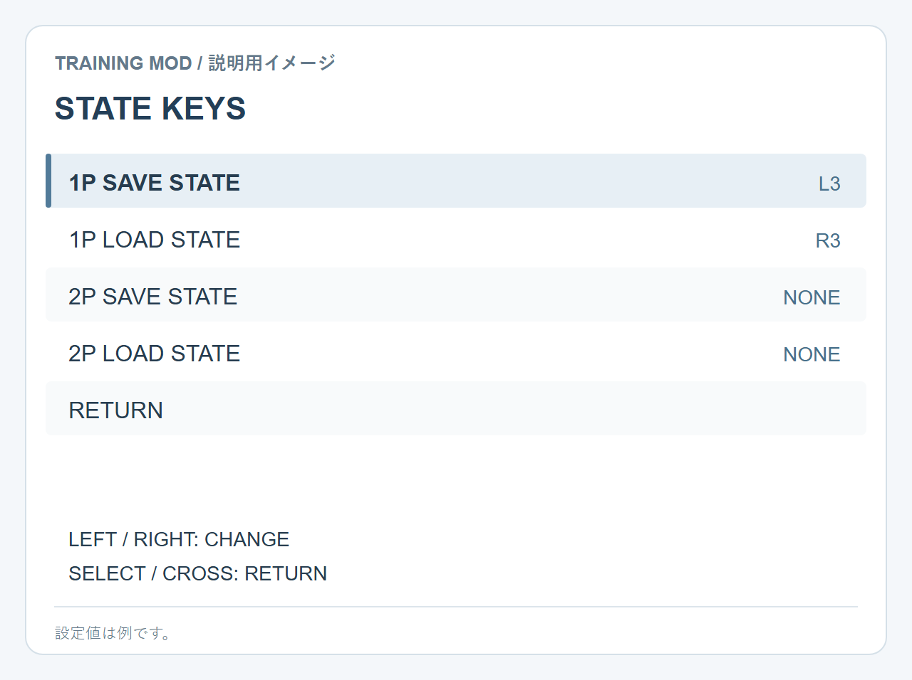
クリックで拡大 STATE KEYS。画面例は1PのSAVEにL3、LOADにR3を割り当てています。 1P SAVE STATE 1P側の保存ボタンを選びます。
1P LOAD STATE 1P側の復元ボタンを選びます。
2P SAVE STATE 2P側の保存ボタンを選びます。
2P LOAD STATE 2P側の復元ボタンを選びます。
RETURN KEY CONFIGへ戻ります。SELECTまたは×でも戻れます。
←／→で変更します。候補はNONE、△、○、×、□、L2、R2、L1、R1、L3、R3。初期値はNONEです。同じ側のSAVEとLOADに同じボタンは設定できません。
割り当てたボタンは通常操作中、保存・復元専用になり、元の戦闘入力に使えなくなります。ショートカットを設定しなくてもスタートボタン長押し、またはポーズメニューから使用できます。 SAVE STATE / LOAD STATE ロード時のフリーズについて 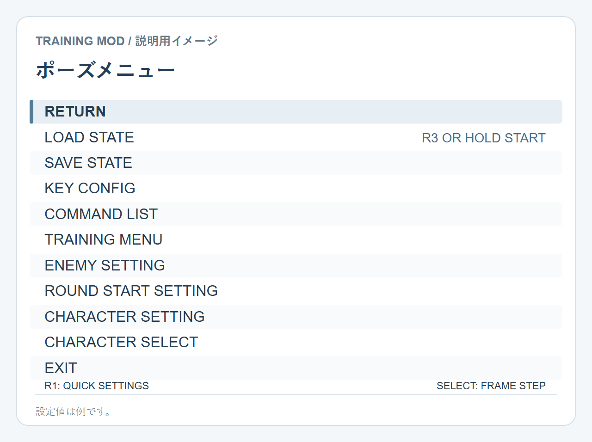
LOAD STATEの右に、ショートカットまたはHOLD STARTの案内が出ます。 やり直しの起点にしたい場面で、START → SAVE STATE → ○の順に押します。 練習を進め、START → LOAD STATE → ○で保存した場面へ戻ります。 HOLD START 通常プレイ中またはコマ送り中にSTARTを約0.5秒（30F）長押しします。この場合、LOAD専用のボタンを用意する必要はありません。KEY CONFIG → SELECT → STATE KEYSでLOAD専用ボタンを割り当てる方法も使えます。
ロード後の再開タイマー DISPLAY SETTING → LOAD DELAYで再開までの待ち時間を0～1秒の範囲で0.25秒ずつ設定します。
データ LOAD時の扱い 位置・状態・体力・技の効果 保存時へ戻ります。 入力履歴・フレームメータ・ゲイン 保存時へ戻ります。 記録スロットの内容・左右情報 現在の内容を維持します。SAVE後に録り直しても古い記録には戻りません。 選択中の記録スロット・記録／再生の進行位置 現在の状態を維持します。記録・再生の途中でLOADしても、保存時の位置へは巻き戻しません。 メニュー設定・ボタン割当 現在の設定を維持します。 ランダム抽選 LOADのたびに抽選されます。COUNTの進行や、すでに受け付けた入力は復元します。STANDING RANDOMで抽選済みのダウンを保存した場合も、そのダウンの抽選結果を復元します。
保存は1枠です。次のSAVEで上書きされます。
表示 対処 NO SAVE まだ保存していません。SAVE STATEを実行してください。 NOT READY 現在は保存・復元を受け付けない場面です。操作可能な練習画面へ戻って試してください。 INVALID MEMORY 復元を中止したときに表示されます。通常のSAVE／LOADで出る場合は不具合です。操作と画面の表示を控えて不具合を報告し、保存し直してください。 OTHER MATCH 保存データを現在の対戦に使えないときに表示されます。この表示が出た場合は不具合です。操作と画面の表示を控えて報告してください。
コマ送りの操作
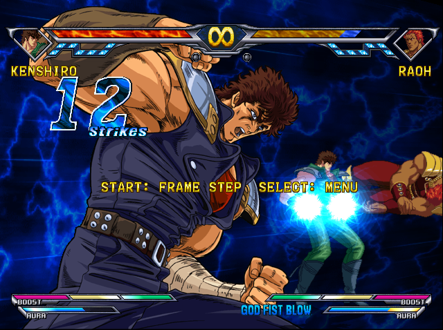
STARTで1F進め、SELECTでメニューを出します。 止める・1Fずつ進める
プレイ中にSTARTでメニューを開き、SELECTで隠します。
STARTを短く押すたびに1F進みます。
技を出すときは、レバーやボタンを入力しながらSTARTで進めます。 通常プレイに戻る
SELECTでメニューを出し、STARTで閉じます。
止めた場面をSAVE／LOADする
SELECTでメニューを出し、SAVE STATEまたはLOAD STATEを選んで○を押します。
実行後も停止したままです。STARTで1Fずつ進められます。 コマ送り中にSTARTを約0.5秒（30F）長押しするとLOADできます。LOAD後はコマ送りの停止状態へ戻ります。
練習例：コンボの入力猶予を調べたい
フレームメータ・表示の読み方 TRAINING MENU → DISPLAY SETTINGでFRAME METERをONにし、技を出すと計測結果が表示されます。
1Fずつ止めて見る方法は、コマ送りの操作 をご覧ください。
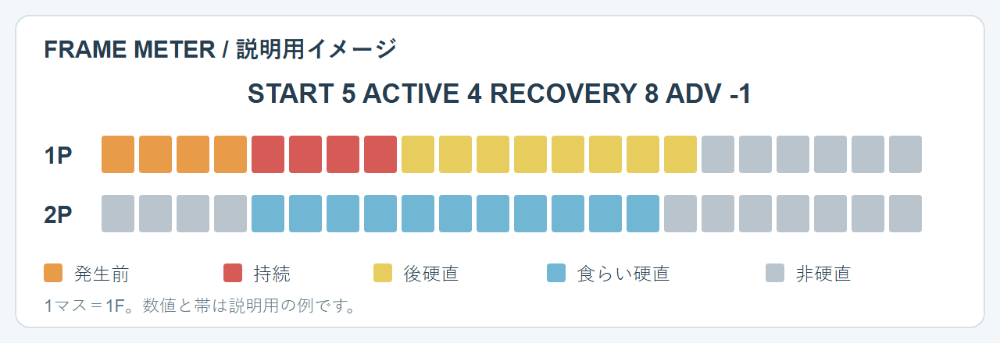
クリックで拡大 画面下の上段が1P、下段が2P。数値とフレームメーターが出ます。
同じ画面のフレームメーター部分。 数字は左からSTART / ACTIVE / RECOVERY / ADV の順です。上の行は1P、下の行は2Pの結果。技名の代わりに、直前に計測した動作の数値が残ります。Fはフレーム。1秒は約60Fです。
表示 読み方 START：発生 技が始まってから最初の攻撃判定が出るまで。 ACTIVE：持続 攻撃判定が連続して出ている時間。多段技で判定のない時間を挟む場合は、次の判定から数え直します。 RECOVERY：後硬直 攻撃判定が消えてから動作が終わるまで。攻撃を受けた側の行には食らい硬直またはガード硬直の経過Fが出ます。 ADV：硬直差 攻撃側から見た硬直差。＋は攻撃側が有利、－は攻撃側が不利です。相手側の行は「-」になります。ガード可能になるタイミングを基準にしています。 末尾の * まだ計測中です。動作が終わり、*が消えてから結果を読みます。 単独の - 未計測、またはその動作では表示しない項目です。
画面の数字を読む例 たとえば1P側の5 / 4 / 8 / -1 は、「発生5F・持続4F・後硬直8F・硬直差は1Pが1F不利」と読みます。ガード硬直中はSTARTとACTIVEに「-」、RECOVERYの途中経過に「*」が付きます。接触からの経過Fを数え、ヒットストップと時間停止は除きます。ガード硬直が解けると、その時点の値が残ります。
ADVの値は、両者が完全に自由に動けるまでの時間の差と1Fずれる場合があります。たとえば数字だけで「この技なら必ず反撃できる」と決めず、相手のGUARD REVERSALを設定して実際に出るか確認してください。距離や技の届き方も関係します。 メーターの色を読む 左が古いフレーム、右が新しいフレームです。上下は同じ時刻でそろっているため、縦に見比べると「1Pのどの動作中に2Pが食らったか」が分かります。横1マスが1F、全100F、CRTモードでは70F表示します。
メーターの色 そのフレームの状態 攻撃の発生前。まだ攻撃判定が出ていない区間。 攻撃判定が出ている区間。投げ・当て身では、受付時間を持続として扱います。 攻撃判定が終わった後の後硬直。 食らい硬直。 ガード硬直。ガード開始モーション中の硬直は濃い青になります。 非硬直の区間や、多段技の判定と判定の間。多段技の間隔は、次の判定を確認すると黄色から灰色へ変わる場合があります。 本体とは別に出ている飛び道具などの攻撃判定。本体が動けるようになっても、弾の判定が残っていればメーターが続きます。
両者の動きが落ち着くと、メーターの更新が止まって結果を確認できます。次の攻撃までの間隔が10F未満なら、その間を灰色のマスで示して表示が続きます。10F以上空くと、次の攻撃から新しい表示になります。
飛び道具を見るとき 飛び道具のSTARTは、弾を出すまでの発生です。ACTIVEの数値は「-」で、弾の持続時間を数字では表示しません。
LVとA・B・C 「LV5 / A」などは攻撃レベルと蓄積タイプです。LVは攻撃レベル1～5。A・B・Cは蓄積の増やし方の分類で、蓄積値そのものや攻撃の強さの順位ではありません。
蓄積タイプ 意味 A 蓄積を増やす判定を行い、次の蓄積加算の猶予を10Fに更新します。 B 蓄積を増やす判定を行いますが、猶予は更新しません。前のAで作った猶予が残っている必要があります。 C その技では蓄積を増やす判定も、猶予の更新も行いません。
実際の蓄積値はSTATSのCHIKUSEKI、蓄積を増やせる残り時間はCHIKUSEKI WINDOWで確認します。蓄積タイプの表示には、飛び道具などの別オブジェクトや特殊処理を含みません。
入力履歴の読み方 INPUT HISTORYを1P/2Pにすると左に1P、右に2Pの入力履歴を表示します。1Pまたは2Pを選ぶとその側だけを表示し、OFFにすると両側を非表示にします。
入力履歴で数える継続Fには、ヒットストップ中のフレームも含みます。
ゲージ獲得量：GAUGE GAIN ONにすると、左右のHPバー上へ「AURA +… BOOST +…」を表示します。コンボの初段から、それぞれのプレイヤーが実際に獲得した量の合計です。攻撃側だけでなく、受け側の回収も別々に見られます。
表示 読み方 AURA + 1本128で、小数点以下2桁まで表示します。 BOOST + 1本74、3本222の単位です。+74なら1本分です。 * と結果の保持 *がある間は計測中。コンボ終了後は次のコンボまで結果を残します。ガードだけでは新しい計測を始めません。 消費・満タン・補充 途中で消費しても、獲得済みの合計からは引きません。満タンで増えなかった分、設定による補充、LOADによる復元は含みません。 表示OFF 非表示中も計測は続きます。ONに戻すと現在または直前の結果を見られます。
気絶ゲージ：STUN GAUGE ONにするとガードゲージの下に、気絶値を小さなバーと「現在値／耐久値」で表示します。左が今たまっている値、右が気絶耐久値です。耐久値と同じ値では気絶せず、超えると気絶条件を満たします。
位置リセットでは気絶耐久値も初期値へ戻り、SAVE／LOADでは保存時の段階へ戻ります。
設定の保存 データ 保存先・期間 表示・トレモ・キャラ固有・自動防御・リバーサル・ラウンド開始の設定 メモリーカードへ自動保存します。 STATE KEYS・記録の方向方式・リバーサルの候補 メモリーカードへ自動保存します。 記録5スロットの入力内容 起動中だけ保持します。電源OFFでは失われます。 SAVE STATEの保存場面 起動中の1枠だけです。電源OFFでは失われます。
設定を次回へ引き継ぐには、メモリーカードを挿して使ってください。保存途中で電源を切ったり、カードを抜いたりしないでください。
困ったとき 症状 確認すること 追加項目がない TRAININGを選び、配布されたELFから起動しているか確認してください。 表示がない DISPLAY SETTINGの各項目と、STATS SETTING内のSTATS・各SLOTを確認してください。 設定がグレー 対象キャラやMODE、ゲージなど、項目の条件を確認してください。 リバーサルが出ない MODE、MOVE、候補のチェック、距離、地上／空中、必要ゲージを確認してください。 記録が再生されない 記録があるSLOTを選び、KEY CONFIGのPLAY MEMORYを確認してください。
不具合を報告するときは、バージョン、1P・2Pのキャラ、保存前後の操作を添えてください。
その他の機能 次の機能も組み込み済みです。別のチートコードを追加する必要はありません。
機能 使い方 トレモ数値を手前に表示 DISPLAY SETTING → DRAW LAYERで選べます。 記録5スロット・ランダム再生 REC MEMORYとRECORD SETTINGで使います。キャラ選択へ戻っても記録を保持します。 記録中の相手設定 ガード、ヒットリアクション、ガーキャン、受け身、起き上がり遅延を相手へ適用できます。 ブーストの1刻み設定・位置指定リセット TRAINING MENUで設定します。 ユダの部下の位置修正、サウザーのカイテン修正 自動で適用します。 バグ昇竜・ムテキングの再現 再現用コードを組み込み済みです。